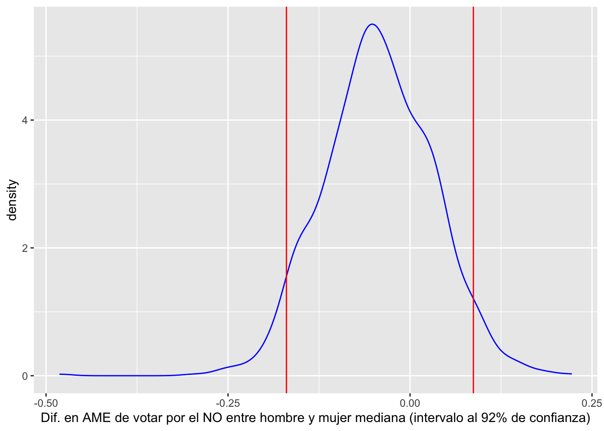

# Escribir install.packages("tinytex") en la consola para instalar "tinytex"
# Carga "tinytex" para compilar PDF
library("tinytex")
library("tidyverse")
library("vcdExtra")
library("carData")
library("marginaleffects")
library("modelr")
data("Chile")
datos_chile <- ChileSOC3070 Análisis de Datos Categóricos
Ponderación: 6% de la nota final del curso. Entrega: Desde el momento de entrega, los estudiantes tienen 1 semana exacta de plazo para completar esta tarea.
\[\newcommand{\vect}[1]{\boldsymbol{#1}}\]

Datos:
Cargar datos con el siguiente código
data("Chile")
datos_chile <- Chile
datos_chile <- datos_chile %>% mutate(vote = case_when(vote=="Y" ~ 0, vote=="N" ~ 1))
datos_chile %>% glimpse()Rows: 2,700
Columns: 8
$ region <fct> N, N, N, N, N, N, N, N, N, N, N, N, N, N, N, N, N, N, N, N,…
$ population <int> 175000, 175000, 175000, 175000, 175000, 175000, 175000, 175…
$ sex <fct> M, M, F, F, F, F, M, F, F, M, M, M, F, F, M, M, F, M, M, F,…
$ age <int> 65, 29, 38, 49, 23, 28, 26, 24, 41, 41, 64, 19, 27, 46, 36,…
$ education <fct> P, PS, P, P, S, P, PS, S, P, P, P, S, PS, S, PS, S, PS, S, …
$ income <int> 35000, 7500, 15000, 35000, 35000, 7500, 35000, 15000, 15000…
$ statusquo <dbl> 1.00820, -1.29617, 1.23072, -1.03163, -1.10496, -1.04685, -…
$ vote <dbl> 0, 1, 0, 1, 1, 1, 1, 1, NA, 1, 0, NA, 0, 0, NA, NA, 1, NA, …Problema:
En esta tarea usarás los datos de una encuesta realizada por FLACSO/Chile en Abril y Mayo de 1988 sobre intención de voto en el plebiscito de 1989, junto con otras variables socio-demográficas.
En particular, trabajarás con el siguiente modelo de regresión logística que estima la probabilidad de votar NO en función de los ingresos, género (M=Hombre, F=Mujer) y el apoyo al status-quo (valores más altos indican mayor apoyo al régimen de Pinochet).
mymodel <- glm(vote ~ income + sex*statusquo, family=binomial, data = datos_chile )
summary(mymodel)
Call:
glm(formula = vote ~ income + sex * statusquo, family = binomial,
data = datos_chile)
Coefficients:
Estimate Std. Error z value Pr(>|z|)
(Intercept) -8.026e-01 1.761e-01 -4.556 5.21e-06 ***
income 6.251e-06 2.416e-06 2.588 0.00966 **
sexM 6.506e-01 2.067e-01 3.147 0.00165 **
statusquo -3.252e+00 2.153e-01 -15.101 < 2e-16 ***
sexM:statusquo 5.507e-02 2.900e-01 0.190 0.84940
---
Signif. codes: 0 '***' 0.001 '**' 0.01 '*' 0.05 '.' 0.1 ' ' 1
(Dispersion parameter for binomial family taken to be 1)
Null deviance: 2368.68 on 1708 degrees of freedom
Residual deviance: 719.63 on 1704 degrees of freedom
(991 observations deleted due to missingness)
AIC: 729.63
Number of Fisher Scoring iterations: 6Calcula la probabilidad de votar por el NO para hombres y mujeres cuyos ingresos y apoyo al status-quo se encuentran en los valores medianos de la muestra.
Calcula el efecto marginal promedio sobre probabilidad de votar por el NO para hombres y mujeres cuyos ingresos y apoyo al status-quo se encuentran en los valores medianos de la muestra.
# A tibble: 2 × 4
sex income statusquo p_hat
<fct> <dbl> <dbl> <dbl>
1 F 15000 -0.0456 0.363
2 M 15000 -0.0456 0.522
Term Estimate Std. Error z Pr(>|z|) S 2.5 % 97.5 %
statusquo -0.752 0.0507 -14.8 <0.001 162.7 -0.852 -0.653
statusquo -0.798 0.0504 -15.8 <0.001 185.0 -0.896 -0.699
Columns: rowid, term, estimate, std.error, statistic, p.value, s.value, conf.low, conf.high, predicted_lo, predicted_hi, predicted, sex, income, statusquo, logit, p_hat, vote
Type: response - Usa el método de Bootstrap para crear un intervalo de confianza al 92% para la diferencia entre el average marginal effect de status-quo de hombres y mujeres.
4% 96%
-0.17727915 0.08469649 